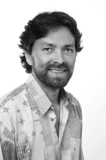

Über mich

- Das Licht der Welt erblickt 1971
- Aufgewachsen an der Nordseeküste
- Ausbildung zum Heil-Erziehungs-Pfleger auf der Ostalb
- Studium der Psychologie (auf Diplom) währenddessen
- Weiterbildung zum und Tätigkeit als Kommunikations-, Verhaltenstrainer und Coach
- Kontinuierliche Mitarbeit am Institut für Klinische Psychologie
- Auslandsaufenthalt in Korea:
- Tätigkeit als Deutsch-Lehrer und Lernender
- Schulung der Intuition und Meditation verschiedener Traditionen
- Rückkehr nach Deutschland und zeitgleich
- Therapieausbildung am IVT in Thüringen
- Tätigkeit als Therapeut an der Psychosomatischen Klinik im Kreis Naumburg
- Psychotherapeutische Tätigkeit in ambulanter Praxis
- Durchführung von Achtsamkeits-Seminaren
- Niederlassung in Privatpraxis